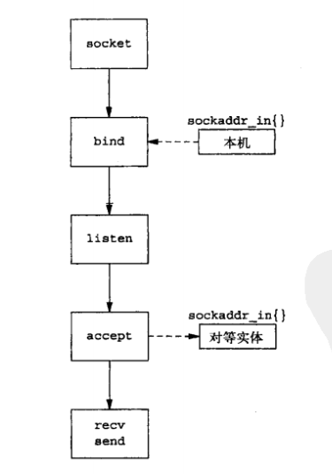
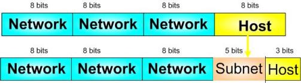
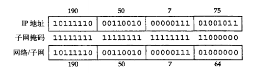
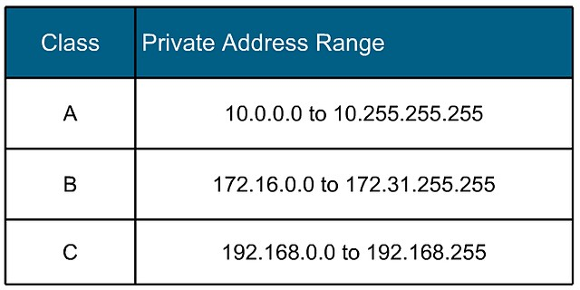
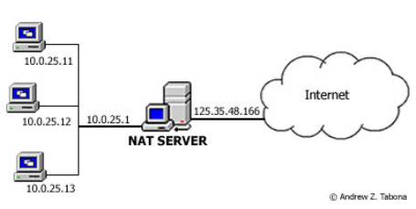
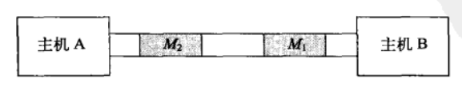
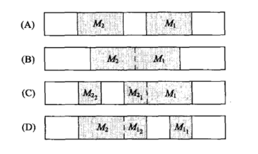
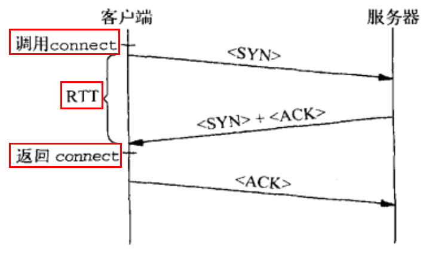

服务器套接字 API 调用过程:

它们的本质区别在于，对无连接协议来说，每个分组的处理都独立于所有其他分组，而对免息那个连接的协议来说，协议实现则维护了与后继分组有关的状态信息。
TCP 向基本的 IP 服务中添加了三项功能:
UDP 向底层的 IP 协议中添加了两项功能:
IP 也有校验和，但是它只对 IP 分组首部进行计算。
IP 地址为 32 比特长。通常会以点分十进制法来写 IP 地址，其中每 4 个字节由一个十进制数表示，并用点将其分割开来。因此，可以将地址 0x11345678 写作 17.52.86.120 。
传统 IP 地址划分为 5 类，这种划分称之为分类编址 (classful addressing):
我们希望有一种方法，使用很小的路由表，并使单个网络 ID 的 IP 地址空间得到有效利用，而且享有每个网段具有独立网络 ID 时所提供的路由便捷性。实现这种功能的机制被称为 —- 子网划分 (subnetting):

每个子网都有一个与之相关的子网掩码 (subnet mask)，用来说明地址中组合了网络和子网络的部分。尽管被称为子网掩码，实际上它说明的是地址中的网络和子网部分 —- 也就是除了主机部分之外所有的内容。和子网掩码进行与操作，解析出 IP 地址的网络部分:

大部分中等及较大规模的组织所需的 IP 地址都比 C 类网络 ID 所能提供的地址要多，CIDR (Classless Inter Domain Routing) 完全抛弃了分类的概念，掩码只是一个被称为前缀的数字，说明了地址中网络部分的比特长度。

使用私有 IP 地址的主机如何跟因特网或其他外网上的主机进行通信呢？这个问题最常见的答案就是使用 NAT (Network Address Translation):

读取 TCP 数据就像从串行端口读取数据一样 —- 无法预先得知在一次指定的读调用中会返回多少字节，调用两次 send 来发送的错误假想模型:

实际上，send 只是将数据复制到主机 A 的 TCP/IP 栈中，就返回了。由 TCP 来决定需要立即发送多少数据，更为可能的是如下的一些方式:

所以可以根据如下几种方式读取:
|
|
|
|
errno 置位 ETIMEOUT。close 和 exit 是无法区分的。这两种情况下，对等实体的 TCP 都会向我们的 TCP 发送一个 FINFIN 来通知我们的应用沉痼，其对等实体已经不在运行了SO_REUSEADDR 选项终止服务器的时候可能会出现这种 Address already in use 问题:
|
|
TCP 连接中进行主动关闭 (发送第一个 FIN) 的那一端会进入 TIME-WAIT 状态，并在此状态停留 2MSL，通过设置 SO_REUSEADDR，指示 TCP 允许我们绑定到一个已经在使用的端口上去，这样就不用等待前一条连接的 TIME-WAIT 状态过期，就可以重启服务器。
connect 调用超时
通常在套接字阻塞的情况下，在收到对客户端 SYN 的 ACK 之前，connect 是不会返回的，所以允许 connect 超时是一项很有用的功能。当然，TCP 最终也会放弃 connect 调用的，但默认时间 (典型值是 75 秒) 比我们希望等待的时间要长。